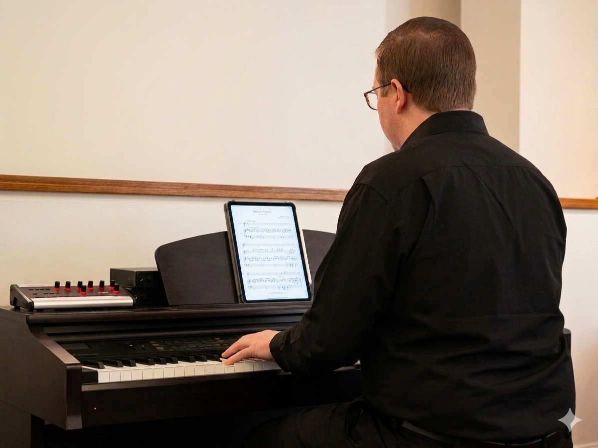

My name is Caleb, and this is my website to showcase how God is working in my life!
"Let everything that has breath praise the LORD. Praise the LORD!" Psalm 150:6
Piano • Guitar • Ukulele • Vocals

Hi, I'm Caleb! I love Jesus, worship music, and playing music. I play piano, guitar, ukulele, and sing.
I'm 19 years old and I live in Burgaw, North Carolina. I've been playing music since I was 13 and singing long before that. Music has always been a huge part of my life, but even more than that, I have a deep passion for the Lord. My heart is to share the love of Christ with others through worship and to use the gifts He’s given me to glorify Him.
I’m currently a Business student at UNCW with a minor in Music, and I’m involved in several Christian clubs on campus that love Jesus and lead worship together. I am beginning to write my own music and seeking where God wants me to go with my life.
I taught myself my first song on the piano before taking lessons with Mike Velie, who helped shape me into the musician I am today. Mike taught me piano and my dad guitar, and together we started the worship band at our church. I led music there for over five years and still step in to lead whenever I can. Worship has always been more than music to me — it’s a way to connect with God and help others experience His presence.
As a Music Minor at UNCW, I’m learning how to write music and deepen my understanding of worship. I meet regularly with people who share a passion for music, and I’ve learned new techniques for leading worship through my involvement with Wrightsville Beach Baptist Church. Through my courses, I've learned more about music theory, composition, and the history of worship music, which has helped me grow as a musician and worship leader. I continue playing and praying every day, seeking God’s direction and asking Him to guide me wherever He wants me to go.
I am beginning to write my own music and making covers of worship songs this summer. I plan to write my own music and eventually start a band. This summer, I’ll be attending Camp Electric in Murfreesboro, Tennessee, where I’ll meet Christian artists and learn how they stepped into the music industry. I’ll also be leading Garage Band Worship Nights at my house — a chance to gather friends, worship together, and continue serving the Lord with the talents He’s given me.
You can reach me at: calebgrover01@gmail.com
Or message me on Instagram or LinkedIn using the links below.